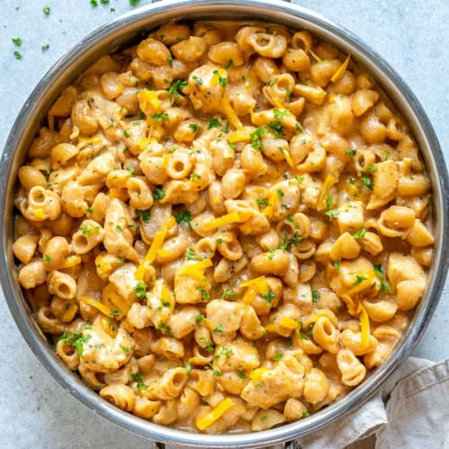

Home
Buffalo-Chicken Macaroni and Cheese

Description
Buffalo-chicken macaroni and cheese is a variation of the classic macaroni and cheese dish that incorporates shredded chicken, buffalo sauce, blue cheese, and a crunchy breadcrumb topping. The dish typically starts with cooked elbow macaroni, which is mixed with a buffalo sauce and chicken mixture made from sautéed onions, celery, garlic, and hot sauce. This is then layered with a creamy cheese sauce made with cheddar, pepper jack, sour cream, and half-and-half. The dish is then topped with a mixture of melted butter, panko breadcrumbs, blue cheese, and parsley before being baked until bubbly and golden brown. The result is a deliciously cheesy and spicy dish with a satisfying crunch on top.
Ingredients
- 7 tablespoons unsalted butter, plus more for the dish
- Kosher salt
- 1 pound elbow macaroni
- 1 small onion, finely chopped
- 2 stalks celery, finely chopped
- 3 cups shredded rotisserie chicken
- 2 cloves garlic, minced
- 3/4 cup hot sauce (preferably Frank's)
- 2 tablespoons all-purpose flour
- 2 teaspoons dry mustard
- 2 1/2 cups half-and-half
- 1 pound yellow sharp cheddar cheese, cut into 1-inch cubes (about 3 1/2 cups)
- ounces pepper jack cheese, shredded (about 2 cups)
- 2/3 cup sour cream
- 1 cup panko (Japanese breadcrumbs)
- 1/2 cup crumbled blue cheese
- 2 tablespoons chopped fresh parsley
Steps
- Preheat the oven to 350 degrees F and butter a 9-by-13-inch baking dish. Bring a large pot of salted water to a boil; add the pasta and cook until al dente, about 7 minutes. Drain.
- Meanwhile, melt 3 tablespoons butter in a large skillet over medium heat. Add the onion and celery and cook until soft, about 5 minutes. Stir in the chicken and garlic and cook 2 minutes, then add 1/2 cup hot sauce and simmer until slightly thickened, about 1 more minute.
- Melt 2 tablespoons butter in a saucepan over medium heat. Stir in the flour and mustard with a wooden spoon until smooth. Whisk in the half-and-half, then add the remaining 1/4 cup hot sauce and stir until thick, about 2 minutes. Whisk in the cheddar and pepper jack cheeses, then whisk in the sour cream until smooth.
- Spread half of the macaroni in the prepared baking dish, then top with the chicken mixture and the remaining macaroni. Pour the cheese sauce evenly on top.
- Put the remaining 2 tablespoons butter in a medium microwave-safe bowl and microwave until melted. Stir in the panko, blue cheese and parsley. Sprinkle over the macaroni and bake until bubbly, 30 to 40 minutes. Let rest 10 minutes before serving.